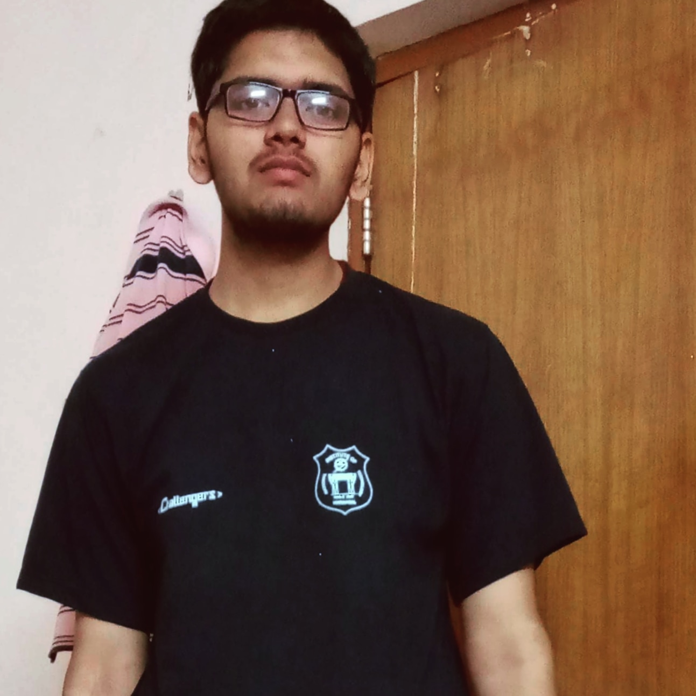

Pragati Prakash

Objective
To leverage my passion for web and software development, along with my strong understanding of Data Structures
and Algorithms (DSA), to contribute to innovative projects and create impactful solutions. As an aspiring
developer, I aim to continuously enhance my skills, collaborate with talented teams, and deliver high-quality
software products that enrich user experiences and solve real-world problems. By staying up-to-date with the
latest technologies and industry trends, I am committed to becoming a versatile and proficient developer capable
of making a positive impact in the world of technology.
Education
- Bachelor of Technology, Civil Engineering - IIT Guwahati (2020-2024)
- 12th, Mathematics - D.A.V Patna (2017-2019)
Technical Skills
- Programming Language: C, C++, Python, Java, MATLAB
- Web Technologies: HTML, JavaScript, CSS
- Software Utilities: VS Code, PyCharm, Android Studio
- Miscellaneous: Android Programming, OOPs, DBMS
Achievementes
-
CodeChef
- 4 * with contest rating 1919
- Secured Global Rank 157 among 19,919 participants in Codechef February Long 2022-II
- Secured Global Rank 339 among 13,060 participants in Codechef Starters 26
- Coding Ninja: Secured Rank 18 among 25,620 participants in CNSAT July
- LeetCode: Solved 650 + questions on DSA, Contest Rating: 1772
- GeeksforGeeks: Solved 500 + questions on DSA, Coding Score: 1600, Institute Rank: 30.
- HackerRank: Problem Solving: 6 * with rating 2346
- JEE Mains 2020: Secured 99.854 Percentile in Mathematics